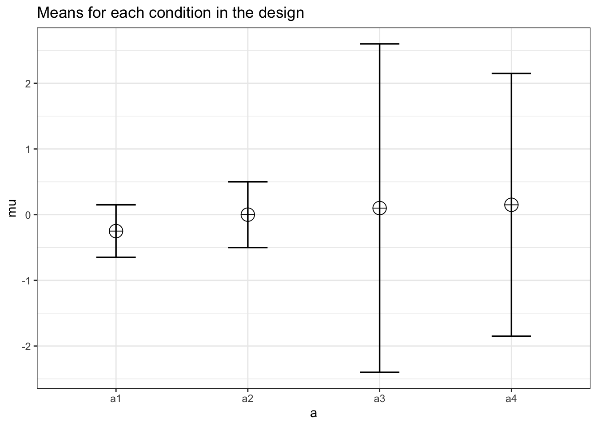
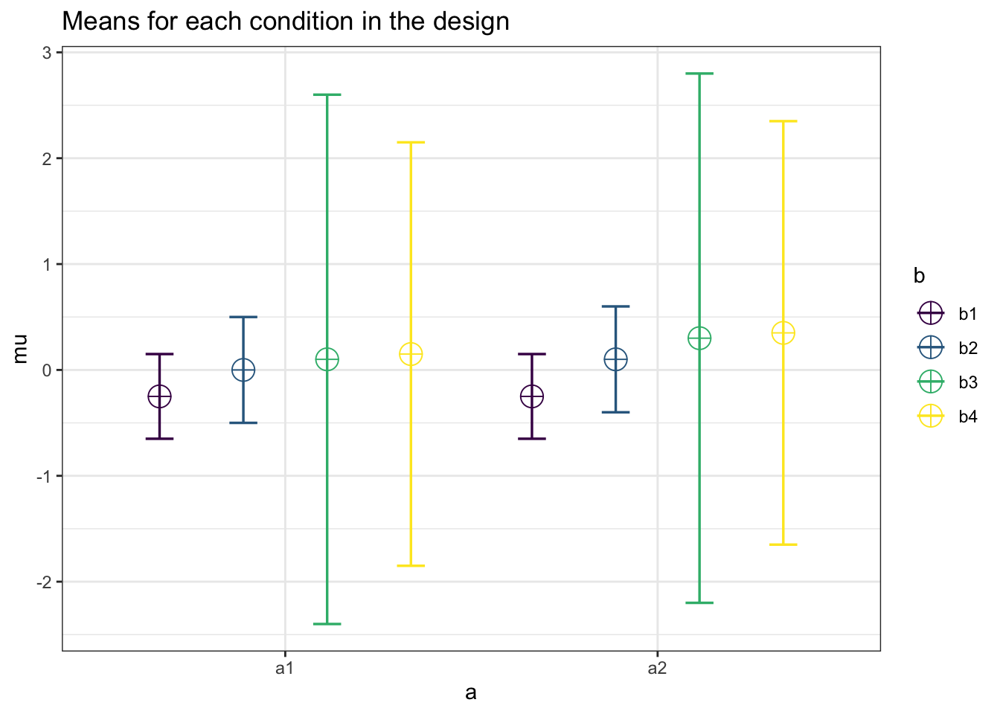

Appendix 1: Direct Comparison to pwr2ppl
In this appendix we have included the performance of Superpower to the pwr2ppl package using Chris Aberson’s examples in Applied Power Analysis for the Behavioral Sciences (2nd edition).
Examples from Chapter 5
Example 5.1/5.2
In this example, Aberson proposes a study expecting an average “score” of 80, 82, 82, and 86 for the control and three treatment groups respectively. The common standard deviation is 10 and the sample size per cell is 60.
design_result <- ANOVA_design(design = "4b",
n = 60,
sd = 10,
mu = c(80, 82, 82, 86),
labelnames = c("DORM",
"Control",
"T1",
"T2",
"T3"),
plot = TRUE)

Now we calculate the analytical result from Superpower.
analytical_result <- power_oneway_between(design_result)
analytical_result$power
## [1] 81.21291
The ANOVA_exact result.
exact_result <- ANOVA_exact(design_result, verbose = FALSE)
exact_result$main_results
## power partial_eta_squared cohen_f non_centrality
## DORM 81.21291 0.04607922 0.2197842 11.4
And these match pwr2ppl.
anova1f_4(m1 = 80, m2 = 82, m3 = 82, m4 = 86,
s1 = 10, s2 = 10, s3 = 10, s4 = 10,
n1 = 60, n2 = 60, n3 = 60, n4 = 60)
## Power = 0.812 for eta-squared = 0.05
Example 5.3
Now a 2 x 2 between-subject ANOVA.
design_result <- ANOVA_design(design = "2b*2b",
n = 100,
sd = 1.7,
mu = c(.85, .85,
0, .6),
plot = TRUE)

Now we calculate the analytical result from Superpower.
analytical_result <- power_twoway_between(design_result)
analytical_result$power_A
## [1] 89.75072
analytical_result$power_B
## [1] 42.10204
analytical_result$power_AB
## [1] 42.10204
The ANOVA_exact result.
exact_result <- ANOVA_exact(design_result, verbose = FALSE)
exact_result$main_results
## power partial_eta_squared cohen_f non_centrality
## a 89.75072 0.025751475 0.16257965 10.467128
## b 42.10204 0.007802747 0.08867981 3.114187
## a:b 42.10204 0.007802747 0.08867981 3.114187
And these match pwr2ppl. From Table 5.12.
anova2x2(m1.1 = 0.85, m1.2 = 0.85, m2.1 = 0.00, m2.2 = 0.60,
s1.1 = 1.7, s1.2 = 1.7, s2.1 = 1.7, s2.2 = 1.7,
n1.1 = 100, n1.2 = 100, n2.1 = 100, n2.2 = 100,
alpha = .05)
## Power for Main Effect Factor A = 0.898
## Power for Main Effect Factor B = 0.421
## Power for Interaction AxB = 0.421
Now we can increase the sample size to 250 per cell
design_result <- ANOVA_design(design = "2b*2b",
n = 250,
sd = 1.7,
mu = c(.85, .85,
0, .6),
plot = TRUE)

Now we calculate the analytical result from Superpower.
analytical_result <- power_twoway_between(design_result)
analytical_result$power_A
## [1] 99.91852
analytical_result$power_B
## [1] 79.60496
analytical_result$power_AB
## [1] 79.60496
The ANOVA_exact result.
exact_result <- ANOVA_exact(design_result, verbose = FALSE)
exact_result$main_results
## power partial_eta_squared cohen_f non_centrality
## a 99.91852 0.025600317 0.1620892 26.167820
## b 79.60496 0.007756107 0.0884123 7.785467
## a:b 79.60496 0.007756107 0.0884123 7.785467
And these match pwr2ppl.
anova2x2(m1.1 = 0.85, m1.2 = 0.85, m2.1 = 0.00, m2.2 = 0.60,
s1.1 = 1.7, s1.2 = 1.7, s2.1 = 1.7, s2.2 = 1.7,
n1.1 = 250, n1.2 = 250, n2.1 = 250, n2.2 = 250,
alpha = .05)
## Power for Main Effect Factor A = 0.999
## Power for Main Effect Factor B = 0.796
## Power for Interaction AxB = 0.796
Examples from Chapter 6
Repeated measures ANOVAs
Example from Table 6.2
design_result <- ANOVA_design(design = "4w",
n = 25,
sd = c(.4,.5,.6,.7),
mu = c(-.25, .00, .10, .15),
r = c(.50,
.30,
.15,
.5,
.30,
.50),
plot = TRUE)

design_result$cor_mat
## a1 a2 a3 a4
## a1 1.00 0.5 0.3 0.15
## a2 0.50 1.0 0.5 0.30
## a3 0.30 0.5 1.0 0.50
## a4 0.15 0.3 0.5 1.00
There is no analytical result from Superpower when the correlations vary.
Now we prouce 3 ANOVA_exact results representing no sphericity correction, Greenhouse-Geisser, and Huynh-Feldt corrected results.
exact_result <- ANOVA_exact(design_result, verbose = FALSE)
exact_result$main_results
## power partial_eta_squared cohen_f non_centrality
## a 80.94999 0.1404744 0.4042678 11.76713
exact_result <- ANOVA_exact(design_result,
correction = "GG",
verbose = FALSE)
exact_result$main_results
## power partial_eta_squared cohen_f non_centrality
## a 74.45876 0.1404744 0.4042678 9.585214
exact_result <- ANOVA_exact(design_result,
correction = "HF",
verbose = FALSE)
exact_result$main_results
## power partial_eta_squared cohen_f non_centrality
## a 78.14498 0.1404744 0.4042678 10.75258
And these match pwr2ppl.
win1F(m1 = -.25, m2 = .00, m3 = .10, m4 = .15,
s1 = .4, s2 = .5, s3 = .6, s4 = .7,
r12 = .50, r13 = .30,
r14 = .15, r23 = .5,
r24 = .30, r34 = .50,
n = 25)
## partial eta-squared = 0.14
## Power (Unadjusted) for n = 25 is 0.809
## Power H-F Adjusted (Epsilon = 0.914) for n = 25 is 0.782
## Power G-G Adjusted (Epsilon = 0.815) for n = 25 is 0.745
Example from Table 6.6
design_result <- ANOVA_design(design = "4w",
n = 100,
sd = c(.4,.5,2.5,2),
mu = c(-.25, .00, .10, .15),
r = c(.50,
.30,
.1,
.5,
.30,
.40),
plot = TRUE)

design_result$cor_mat
## a1 a2 a3 a4
## a1 1.0 0.5 0.3 0.1
## a2 0.5 1.0 0.5 0.3
## a3 0.3 0.5 1.0 0.4
## a4 0.1 0.3 0.4 1.0
There is no analytical result from Superpower when the correlations vary.
Now we prouce 3 ANOVA_exact results representing no sphericity correction, Greenhouse-Geisser, and Huynh-Feldt corrected results.
exact_result <- ANOVA_exact(design_result, verbose = FALSE)
exact_result$main_results
## power partial_eta_squared cohen_f non_centrality
## a 39.74802 0.01502077 0.1234902 4.529201
exact_result <- ANOVA_exact(design_result,
correction = "GG",
verbose = FALSE)
exact_result$main_results
## power partial_eta_squared cohen_f non_centrality
## a 31.78652 0.01502077 0.1234902 2.997994
exact_result <- ANOVA_exact(design_result,
correction = "HF",
verbose = FALSE)
exact_result$main_results
## power partial_eta_squared cohen_f non_centrality
## a 32.12295 0.01502077 0.1234902 3.059139
And these match pwr2ppl.
win1F(m1 = -.25, m2 = .00, m3 = .10, m4 = .15,
s1 = .4, s2 = .5, s3 = 2.5, s4 = 2.0,
r12 = .50, r13 = .30, r14 = .10,
r23 = .5, r24 = .30, r34 = .40,
n = 100)
## partial eta-squared = 0.015
## Power (Unadjusted) for n = 100 is 0.397
## Power H-F Adjusted (Epsilon = 0.675) for n = 100 is 0.321
## Power G-G Adjusted (Epsilon = 0.662) for n = 100 is 0.318
Example from Table 6.8
design_result <- ANOVA_design(design = "2w*4w",
n = 80,
sd = c(.4,0.5,
2.5,2.0,
0.4,0.5,
2.5,2.0),
mu = c(-0.25,0.0,
0.10,0.15,
-0.25,0.10,
0.30,0.35),
r = c(.5),
plot = TRUE)

design_result$cor_mat
## a1_b1 a1_b2 a1_b3 a1_b4 a2_b1 a2_b2 a2_b3 a2_b4
## a1_b1 1.0 0.5 0.5 0.5 0.5 0.5 0.5 0.5
## a1_b2 0.5 1.0 0.5 0.5 0.5 0.5 0.5 0.5
## a1_b3 0.5 0.5 1.0 0.5 0.5 0.5 0.5 0.5
## a1_b4 0.5 0.5 0.5 1.0 0.5 0.5 0.5 0.5
## a2_b1 0.5 0.5 0.5 0.5 1.0 0.5 0.5 0.5
## a2_b2 0.5 0.5 0.5 0.5 0.5 1.0 0.5 0.5
## a2_b3 0.5 0.5 0.5 0.5 0.5 0.5 1.0 0.5
## a2_b4 0.5 0.5 0.5 0.5 0.5 0.5 0.5 1.0
There is no analytical result from Superpower for two-way within subjects designs.
Now we prouce 3 ANOVA_exact results representing no sphericity correction, Greenhouse-Geisser, and Huynh-Feldt corrected results.
#In comparision to pwr2ppl the main effects are "flipped"
# e.g. Superpower a = pwr2ppl "B"
exact_result <- ANOVA_exact(design_result, verbose = FALSE)
exact_result$main_results
## power partial_eta_squared cohen_f non_centrality
## a 27.24340 0.023198088 0.15410717 1.8761726
## b 74.84647 0.040077020 0.20432877 9.8948083
## a:b 10.23225 0.003471099 0.05901855 0.8255159
exact_result <- ANOVA_exact(design_result,
correction = "GG",
verbose = FALSE)
exact_result$main_results
## power partial_eta_squared cohen_f non_centrality
## a 27.243403 0.023198088 0.15410717 1.8761726
## b 58.540772 0.040077020 0.20432877 5.9072378
## a:b 9.130272 0.003471099 0.05901855 0.5072161
exact_result <- ANOVA_exact(design_result,
correction = "HF",
verbose = FALSE)
exact_result$main_results
## power partial_eta_squared cohen_f non_centrality
## a 27.243403 0.023198088 0.15410717 1.8761726
## b 59.182337 0.040077020 0.20432877 6.0353398
## a:b 9.174188 0.003471099 0.05901855 0.5187745
And these match pwr2ppl.
win2F(m1.1 = -.25, m2.1 = 0,
m3.1 = .10, m4.1 = .15,
m1.2 = -.25, m2.2 = .10,
m3.2 = .30, m4.2 = .35,
s1.1 = .4, s2.1 = .5,
s3.1 = 2.5, s4.1 = 2.0,
s1.2 = .4, s2.2 = .5,
s3.2 = 2.5, s4.2 = 2.0,
r = .5, n = 80)
## Partial eta-squared Factor A = 0.04
## Power Factor A (Unadjusted) for n = 80 is 0.748
## Power Factor A H-F Adjusted (Epsilon = 0.61) for n = 80 is 0.592
## Power Factor A G-G Adjusted (Epsilon = 0.597) for n = 80 is 0.585
## Partial eta-squared Factor B = 0.023
## Power Factor B (Unadjusted) for n = 80 is 0.272
## Power Factor B Adjusted - There is no adjustment when levels = 2
## Partial eta-squared AxB = 0.003
## Power AxB (Unadjusted) for n = 80 is 0.102
## Power AxB H-F Adjusted (Epsilon = 0.628) for n = 80 is 0.092
## Power AxB G-G Adjusted (Epsilon = 0.614) for n = 80 is 0.091
Example from Chapter 7
Mixed effect ANOVA
From Table 7.2
In this case we must write out an entire correlation matrix.
This means the diagonal element is equal to 1 and the off-diagonal elements corresponding to between-subjects factors are equal to zero.
design_result <- ANOVA_design("2b*4w",
n = 50,
sd = c(.4, .5, 0.6, .7,
.4, .5, .6, .7),
r = c(1.0,0.5,0.3,0.15,0.0,0.0,0.0,0.0,
0.5,1.0,0.5,0.3,0.0,0.0,0.0,0.0,
0.3,0.5,1.0,0.5,0.0,0.0,0.0,0.0,
0.15,0.3,0.5,1.0,0.0,0.0,0.0,0.0,
0.0,0.0,0.0,0.0,1.0,0.5,0.3,0.15,
0.0,0.0,0.0,0.0,0.5,1.0,0.5,0.3,
0.0,0.0,0.0,0.0,0.3,0.5,1.0,0.5,
0.0,0.0,0.0,0.0,0.15,0.3,0.5,1.0),
mu = c(-.25, 0.0, 0.10, 0.15,
-.25,-.25,-.25,-.25))
design_result$cor_mat
## a1_b1 a1_b2 a1_b3 a1_b4 a2_b1 a2_b2 a2_b3 a2_b4
## a1_b1 1.00 0.5 0.3 0.15 0.00 0.0 0.0 0.00
## a1_b2 0.50 1.0 0.5 0.30 0.00 0.0 0.0 0.00
## a1_b3 0.30 0.5 1.0 0.50 0.00 0.0 0.0 0.00
## a1_b4 0.15 0.3 0.5 1.00 0.00 0.0 0.0 0.00
## a2_b1 0.00 0.0 0.0 0.00 1.00 0.5 0.3 0.15
## a2_b2 0.00 0.0 0.0 0.00 0.50 1.0 0.5 0.30
## a2_b3 0.00 0.0 0.0 0.00 0.30 0.5 1.0 0.50
## a2_b4 0.00 0.0 0.0 0.00 0.15 0.3 0.5 1.00
Now the results from ANOVA_exact.
exact_result <- ANOVA_exact(design_result,
correction = "none",
verbose = FALSE)
exact_result$main_results
## power partial_eta_squared cohen_f non_centrality
## a 86.42918 0.08878976 0.3121563 9.549274
## b 82.68405 0.03848397 0.2000607 11.767135
## a:b 82.68405 0.03848397 0.2000607 11.767135
exact_result <- ANOVA_exact(design_result,
correction = "GG",
verbose = FALSE)
exact_result$main_results
## power partial_eta_squared cohen_f non_centrality
## a 86.42918 0.08878976 0.3121563 9.549274
## b 76.47495 0.03848397 0.2000607 9.585214
## a:b 76.47495 0.03848397 0.2000607 9.585214
exact_result <- ANOVA_exact(design_result,
correction = "HF",
verbose = FALSE)
exact_result$main_results
## power partial_eta_squared cohen_f non_centrality
## a 86.42918 0.08878976 0.3121563 9.549274
## b 77.31933 0.03848397 0.2000607 9.848557
## a:b 77.31933 0.03848397 0.2000607 9.848557
And the results from pwr2ppl.
win1bg1(m1.1 = -.25, m2.1 = 0, m3.1 = 0.10, m4.1 = .15,
m1.2 = -.25, m2.2 = -.25, m3.2 = -.25, m4.2 = -.25,
s1.1 = .4, s2.1 = .5, s3.1 = 0.6, s4.1 = .7, s1.2 = .4,
s2.2 = .5, s3.2 = .6, s4.2 = .7,
n = 50,
r1.2_1 = .5, r1.3_1 = .3, r1.4_1 = .15,
r2.3_1 = .5, r2.4_1 = .3, r3.4_1 = .5,
r1.2_2 = .5, r1.3_2 = .3, r1.4_2 = .15,
r2.3_2 = .5, r2.4_2 = .3, r3.4_2 = .5)
## Partial eta-squared Factor A = 0.089
## Power Factor A (Between) for n = 50 is 0.864
## Partial eta-squared Factor B = 0.038
## Power Factor B (Within) for n = 50 is 0.827
## Power Factor B H-F Adjusted (Epsilon = 0.837), for n = 50 is 0.773
## Power Factor B G-G Adjusted (Epsilon = 0.815) for n = 50 is 0.765
## Partial eta-squared Factor AxB = 0.089
## Power AxB (Unadjusted) for n = 50 is 0.827
## Power AxB H-F Adjusted (Epsilon = 0.837) for n = 50 is 0.761
## Power AxB G-G Adjusted (Epsilon = 0.815) for n = 50 is 0.765